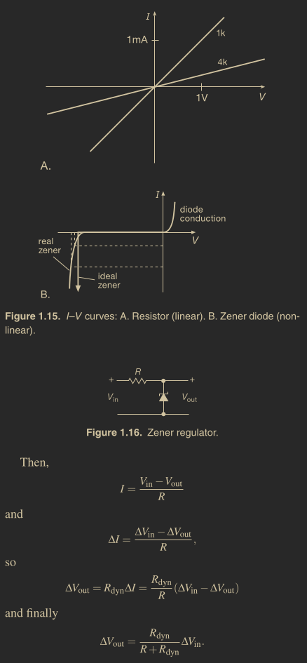
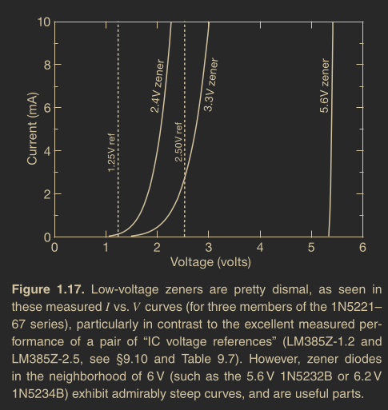

Created at: 2025-02-02

Zeners are used to create a constant voltage inside a circuit somewhere, simply done by providing them with a (roughly constant) current derived from a higher voltage within the circuit.
Included in the specifications of a zener will be its dynamic resistance, given at a certain current. For example, a zener might have a dynamic resistance of 10 Ω at 10 mA, at its specified zener voltage of 5 V. Using the definition of dynamic resistance, we find that a 10% change in applied current will therefore result in a change in voltage of:
Rdyn = dynamic resistance
ΔVout = Rdyn*ΔI = 10 × 0.1 × 0.01 = 10 mV
or
ΔVout/V = 0.002 = 0.2%
thus demonstrating good voltage-regulating ability.
Note that ΔVout only depends of Rdyn and ΔI because of the phisical representation of a zener diode!
It’s a useful fact, when dealing with zener diodes, that the dynamic resistance of a zener diode varies roughly in inverse proportion to current. It’s worth knowing, also, that there are ICs designed to substitute for zener diodes; these “two-terminal voltage references” have superior performance – much lower dynamic resistance (less than 1 Ω, even at currents as small as 0.1 mA; that’s a thousand times better than the zener we just used), and excellent temper ature stability (better than 0.01%/C).
When thinking about zeners, it’s worth remembering that low-voltage units (e.g., 3.3 V) behave rather poorly, in terms of constancy of voltage versus current (Figure 1.17); if you think you need a low voltage zener, use a two-terminal reference instead
